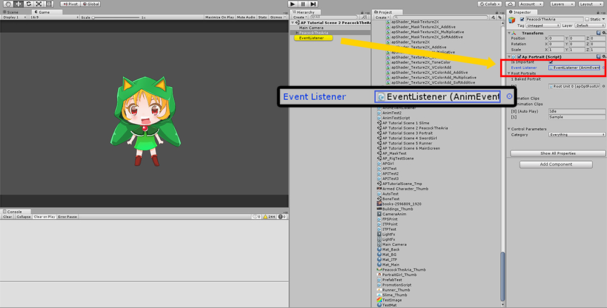
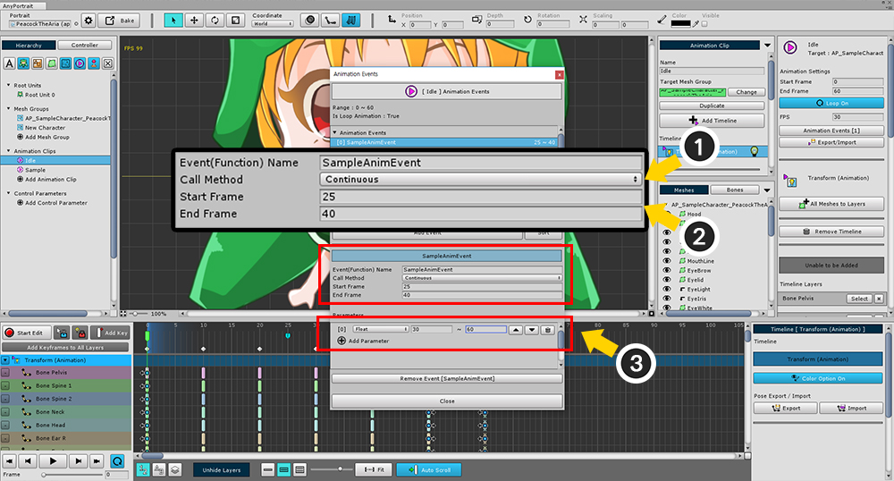
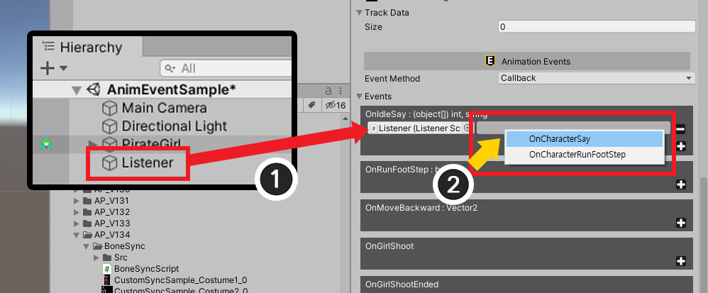
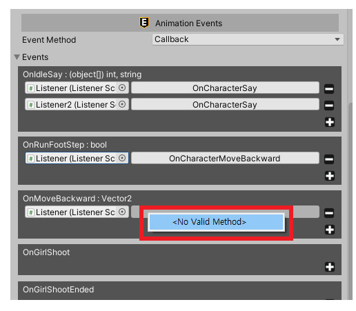
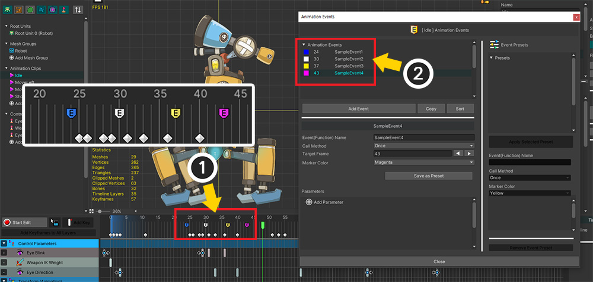
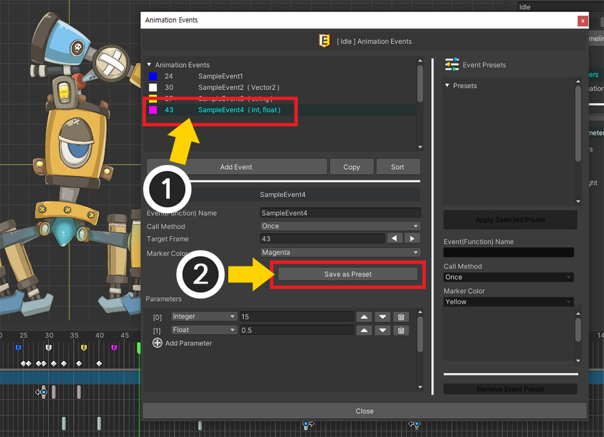
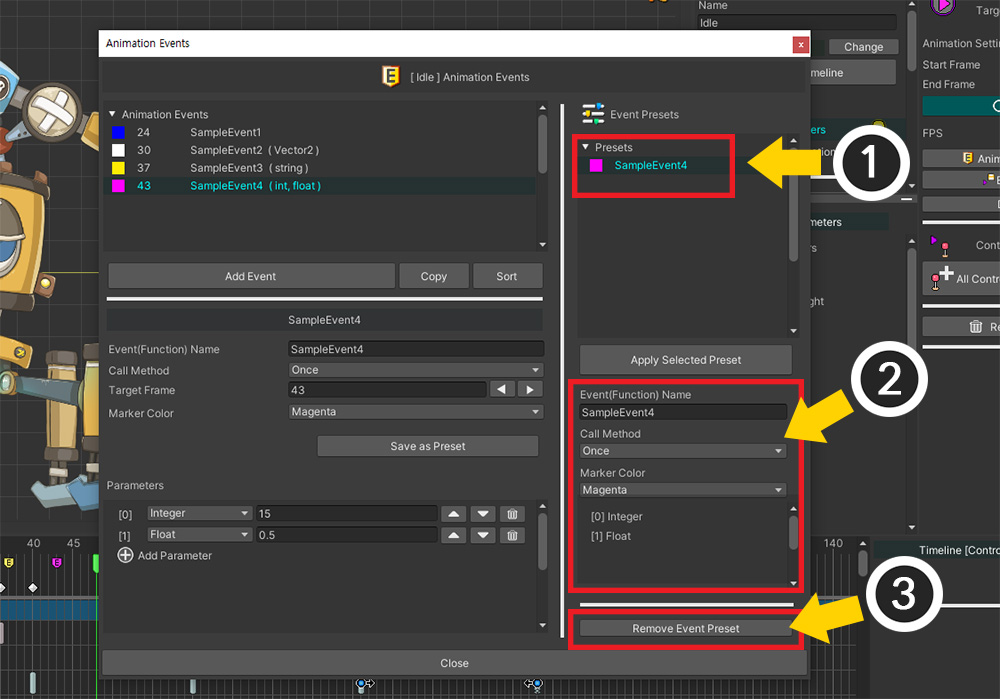
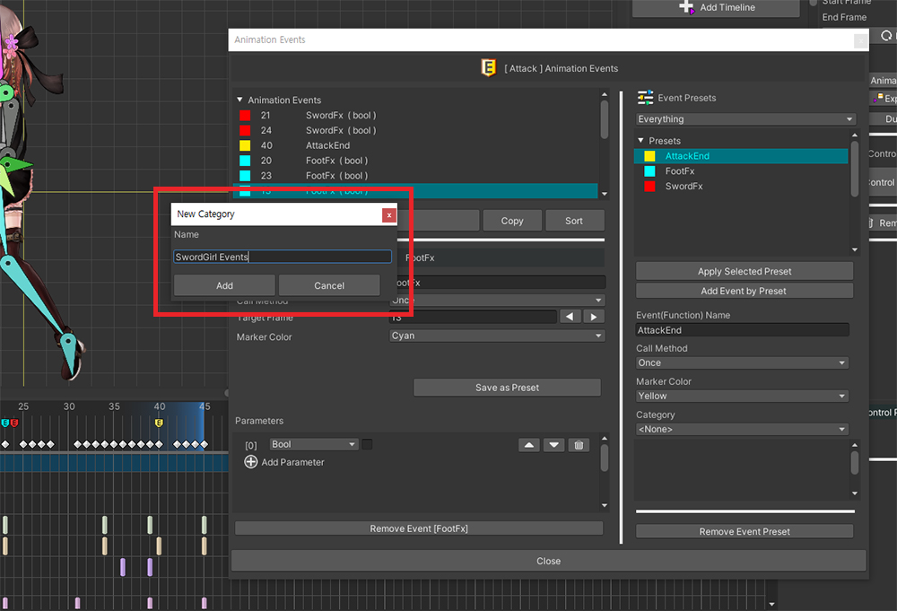
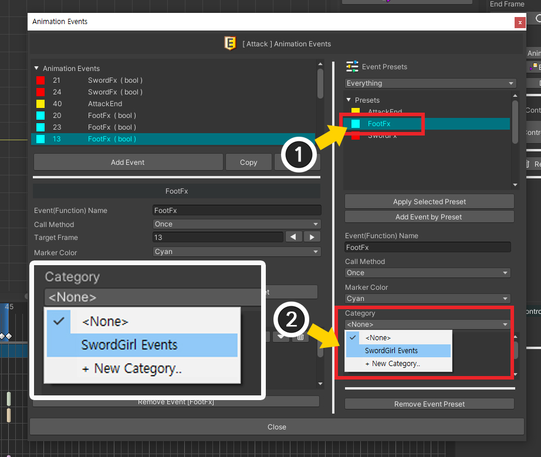
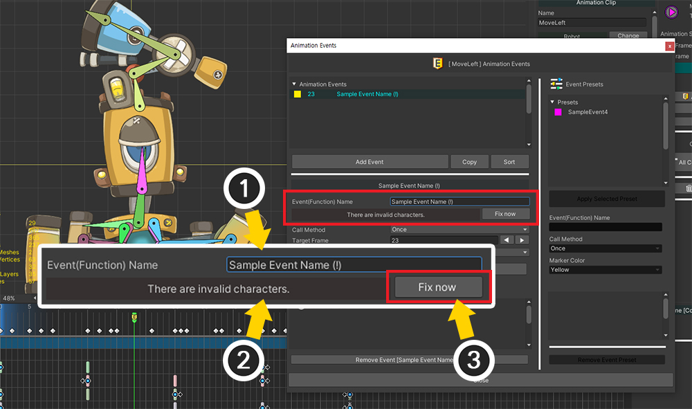

AnyPortrait > 메뉴얼 > 애니메이션 이벤트와 스크립트 연동
애니메이션 이벤트와 스크립트 연동
1.4.5
게임에 따라서는 애니메이션의 특정 시점에서 어떤 상호 작용을 해야할 필요가 있습니다.
달리는 캐릭터가 점프를 할 때 흙먼지가 날릴 수도 있고, 휘두르는 검에 몬스터가 맞을 수도 있어야 합니다.
이 페이지에서는 애니메이션 이벤트 기능을 이용해서 스크립트와 연동하는 방법을 알아봅니다.
(C# 스크립트가 포함되어 있습니다.)

애니메이션 속성 UI에서 Animation Events 버튼을 눌러 애니메이션 이벤트를 등록하는 다이얼로그를 호출할 수 있습니다.
AnyPortrait v1.4.0에서 변경된 애니메이션 이벤트 다이얼로그에 대해선 페이지 하단에서 보실 수 있습니다.
애니메이션 이벤트 추가하고 스크립트와 연동하기

(1) Add Event 버튼을 눌러서 이벤트를 새로 추가합니다.
(2) 이벤트의 이름을 지정하고, 호출될 프레임을 입력합니다.
이벤트의 이름으로 스크립트와 연동이 되므로, 이때의 이름을 기억해둡니다.
여기서는 SampleAnimEvent 이라는 이름으로 만들었습니다.

애니메이션 이벤트가 추가되면 타임라인 GUI에 해당 위치에 이벤트 마커가 추가된 것을 볼 수 있습니다.

Bake를 하고 씬으로 나갑니다.
이벤트와 연동될 스크립트를 만듭니다.
(1) 스크립트가 포함될 GameObject를 만듭니다. (꼭 새로 만들 필요는 없으며, 스크립트가 포함되는 GameObject면 아무거나 됩니다.)
(2) MonoBehaviour 스크립트를 생성하여 추가합니다.
다음의 코드를 작성합니다.
위에서 작성한 애니메이션 이벤트의 이름이 SampleAnimEvent인 점을 기억합시다.
using UnityEngine;
public class AnimEventListener : MonoBehaviour
{
void Start() { }
void SampleAnimEvent()
{
Debug.Log("Sample Anim Event");
}
}
위 코드에서 알 수 있듯이, 작성된 애니메이션 이벤트와 동일한 이름의 함수를 호출하는 방식입니다.
따라서 애니메이션 이벤트와 스크립트는 동일한 이름, 동일한 인자를 가지고 있어야 합니다.

캐릭터를 선택하면 apPortrait 속성이 Inspector에 표시됩니다.
여기서 Event Listener 항목에 방금 만든 스크립트가 포함된 GameObject를 넣어서 이벤트를 받을 수 있게 합니다.

게임을 실행하면 이벤트가 발생하고, 스크립트에서 이를 받아서 로그를 출력하는 것을 콘솔창에서 확인할 수 있습니다.
애니메이션 이벤트에 파라미터 추가하기

애니메이션 이벤트에 파라미터를 추가하여 스크립트와 연동할 수 있습니다.
이때 파라미터는 함수의 매개변수로 입력이 됩니다.
(1) Add Parameter 버튼을 눌러서 파라미터를 추가합니다.
(2) 파라미터의 변수 타입을 선택하고 (3) 전달될 값을 입력합니다.
(파라미터로 전달할 수 있는 타입은 Bool, Int, Float, Vector2, String 입니다.)
using UnityEngine;
public class AnimEventListener : MonoBehaviour
{
void Start() { }
void SampleAnimEvent(float floatValue)
{
Debug.Log("Sample Anim Event - " + floatValue);
}
}
파라미터를 받을 수 있도록 함수를 수정합니다.
변수 타입에 맞게 매개 변수를 만들어줍니다.

게임을 실행하면 파라미터의 값이 전달되는 것을 확인할 수 있습니다.
여러 프레임에서 지속적으로 발생하는 애니메이션 이벤트 만들기

프레임 1개에서 이벤트를 발생시키는 것이 아닌, 일정 프레임동안 지속적으로 이벤트를 발생시켜야 하는 경우도 있습니다.
(1) Call Method를 Once에서 Continuous로 바꿉니다.
(2) Start Frame과 End Frame을 각각 지정해줍니다.
(3) 파라미터의 값 2개를 지정할 수 있습니다.
각각 Start Frame과 End Frame에서 호출되는 값이며, 그 사이에서는 선형으로 보간된 값을 스크립트로 전달합니다.
(String 타입의 파라미터는 보간이 되지 않으므로 이 기능이 지원되지 않습니다.)

Continuous 타입의 애니메이션 이벤트는 다른 색상의 마커로 표시됩니다. 시작점은 파란색, 끝점은 녹색입니다.

Bake 후 게임을 실행하면 매 프레임마다 보간되는 값이 호출되는 것을 확인할 수 있습니다.
2개 이상의 파라미터를 가지는 애니메이션 이벤트 만들기

여러 개의 파라미터를 가지는 애니메이션 이벤트를 만들 수도 있습니다.
파라미터마다 다른 타입을 가질 수도 있습니다.
위 화면은 3개의 파라미터를 각각 Integer, Float, Vector2 타입으로 만든 화면입니다.
(구별하기 위해 애니메이션 이벤트를 새로 생성하고 이름을 MultipleParamAnimEvent로 하였습니다.)
using UnityEngine;
public class AnimEventListener : MonoBehaviour
{
void Start() { }
void MultipleParamAnimEvent(object[] multipleParams)
{
int intParam = (int)multipleParams[0];
float floatParam = (float)multipleParams[1];
Vector2 vector2Param = (Vector2)multipleParams[2];
Debug.Log("Multiple Param Anim Event");
Debug.Log("Param 1 : " + intParam);
Debug.Log("Param 2 : " + floatParam);
Debug.Log("Param 3 : " + vector2Param);
}
}
함수 매개 변수로 3개의 변수가 아닌 object 배열 타입의 1개의 매개 변수만 사용됩니다.
이 배열에는 에디터에서 정의했던 순서대로 파라미터가 포함되어 있습니다.
변수를 형변환을 통해 참조할 수 있습니다.

게임을 실행하면 3개의 파라미터가 스크립트로 전달되는 것을 확인할 수 있습니다.
개선된 인스펙터에서의 애니메이션 이벤트
1.3.4
AnyPortrait v1.3.4에서 업데이트된 인스펙터(관련 페이지)를 통해서, 애니메이션 이벤트들을 빠르게 확인할 수 있습니다.
또한 애니메이션 이벤트를 스크립트로 복사하거나, 호출 방식을 바꾸는 것이 가능합니다.

애니메이션 이벤트를 가진 캐릭터를 유니티 씬에서 선택하면, 위와 같은 화면이 인스펙터에 나타납니다.
(1) 애니메이션 호출 방식을 Send Message와 Callback 중에서 선택할 수 있습니다. 기존의 방식은 Send Message 입니다.
(2) 애니메이션 이벤트를 받아서 처리할 리스너 객체입니다. (기존의 Inspector 상단에 존재했던 항목의 위치가 바뀌었습니다.)
(3) 애니메이션 이벤트들 입니다. 이벤트의 이름과 파라미터들을 확인할 수 있습니다.
(4) 애니메이션 이벤트를 클립보드로 복사합니다. 복사된 양식은 C# 스크립트로 붙여넣을 수 있게 가공됩니다.
(5) 모든 애니메이션 이벤트들을 클립보드로 복사합니다.
여기서 추가된 기능인 "클립보드로 애니메이션 이벤트 복사하기" 기능을 사용해봅시다.
먼저 (4) 또는 (5)의 복사 버튼을 누릅니다.

스크립트 에디터를 열어서 붙여넣기를 하면 위와 같이 애니메이션 이벤트들의 이름, 형식에 맞는 코드가 추가됩니다.
이제 애니메이션 이벤트를 외웠다가 작성하는 불필요한 수고를 덜 수 있을 것입니다.

v1.3.4에서 추가된 또다른 기능은 Callback 방식입니다.
기존의 Send Message가 Unity Send Message를 이용한 것이라면, 이것은 함수를 직접 지정하는 Unity Event와 유사한 방식입니다.
성능의 향상은 물론이고, 이벤트를 받을 함수의 이름을 동일하게 설정하지 않아도 되는 장점이 있습니다.
(실제로 Unity Event를 사용하지는 않았지만, 저희는 사용자들이 Unity Event처럼 사용할 수 있도록 거의 유사하게 개발하였습니다.)
(1) Event Method를 Callback으로 변경해봅시다.

기존의 Event Listener가 없어지고, 이벤트 각각의 호출 대상을 지정하는 것으로 UI가 변경됩니다.

(1) + 버튼을 누릅니다.
(2) 이벤트 리스너와 콜백 함수를 설정할 수 있는 항목이 추가됩니다.

(1) 씬에서 이벤트를 받을 Monobehaviour 객체를 할당합니다.
(2) 우측의 빈칸을 클릭하면 이벤트를 받을 수 있는 함수 목록이 나타납니다. 적절한 함수를 선택합니다.
만약 하나의 GameObject에 두개 이상의 Monobehaviour 컴포넌트가 추가되어 있다면, 함수 목록을 통해서 리스너를 교체할 수 있습니다.

(1) 같은 방식으로 하나의 이벤트를 동시에 여러개의 리스너 또는 여러개의 함수에서 받을 수 있도록 설정할 수 있습니다.
(2) 항목을 삭제하고자 한다면 - 버튼을 누르세요.

콜백 함수를 지정할 때, 이벤트 형식(파라미터의 개수, 종류, 순서)에 맞는 함수가 없다면 위와 같이 리스트에 아무것도 나오지 않습니다.
어떤 방식을 사용하든 애니메이션 이벤트를 받아서 스크립트의 내용을 실행시킬 수 있는 것은 동일합니다.
자신에게 맞는 방식을 사용해보세요!
개선된 애니메이션 이벤트 마커
1.4.0

타임라인에서 이벤트를 쉽게 구분하기 위해서 이벤트 마커의 색상을 설정하는 옵션이 추가되었습니다.
(1) 애니메이션 이벤트를 선택합니다.
(2) Marker Color의 값을 변경해봅시다.

(1) 타임라인 UI에서 애니메이션 이벤트 마커 아이콘의 색상이 바뀐 것을 볼 수 있습니다.
(2) 이벤트 리스트에서도 어떤 색상이 설정되었는지 볼 수 있습니다.

또한 Continuous 타입의 이벤트의 마커가 타임라인 UI에서 더욱 직관적으로 나타나도록 개선되었습니다.
애니메이션 이벤트 프리셋
1.4.0

동일한 이름의 애니메이션 이벤트가 여러 애니메이션에서 호출될 때, 이를 재사용하도록 저장하는 기능이 있으면 편리할 것입니다.
AnyPortrait v1.4.0에 애니메이션 이벤트를 프리셋으로 저장하여 활용할 수 있는 기능이 추가되었습니다.
(1) 애니메이션 이벤트 다이얼로그의 왼쪽은 기존과 동일하게 현재 애니메이션의 이벤트 리스트와 선택된 이벤트의 속성들이 나타납니다.
(2) 다이얼로그의 오른쪽에는 새로 추가된 애니메이션 이벤트 프리셋이 나타납니다.

(1) 저장하고자 하는 애니메이션 이벤트를 선택합니다.
(2) Save as Preset 버튼을 누릅니다.

(1) 애니메이션 이벤트 프리셋 리스트에 선택했던 이벤트가 추가되었습니다.
(2) 프리셋을 선택하면, 해당 프리셋의 속성들이 나타납니다.
(3) 만약, 선택한 프리셋을 삭제하고자 한다면 Remove Event Preset 버튼을 누릅니다.

이 기능은 동일한 애니메이션은 물론이고, 다른 애니메이션에도 사용될 수 있습니다.
저장된 프리셋을 이용하여 다른 애니메이션에 이벤트를 추가해봅시다.
(1) 다른 애니메이션을 선택합니다.
(2) 이벤트를 추가할 위치로 타임 슬라이더를 이동시킵니다.
(3) Animation Events 버튼을 누릅니다.

(1) Add Event 버튼을 누릅니다.
(2) 추가된 이벤트를 선택합니다.
(3) 적용하고자 하는 프리셋을 선택합니다.
(4) Apply Selected Preset 버튼을 누릅니다.

(5) 안내 메시지를 확인하고 Apply 버튼을 누릅니다.

프리셋으로 저장된 애니메이션 이벤트 정보가 복사되어 대상으로 적용된 것을 볼 수 있습니다.
현재 프레임에 프리셋에 의한 이벤트를 바로 생성하기
1.4.5
이벤트를 생성하고 프리셋을 적용하는 단계를 단축할 수 있습니다.
프레임을 선택해서 프리셋이 적용된 이벤트를 한번에 생성해봅시다.

(1) 이벤트가 생성될 위치로 타임 슬라이더를 이동시킵니다.
(2) 프리셋을 선택합니다.
(3) Add Event by Preset 버튼을 누르면 해당 프레임에 바로 프리셋이 적용된 이벤트가 생성됩니다.
프리셋의 카테고리를 지정하기
1.4.5
이벤트 프리셋이 너무 많으면, 리스트에서 매번 필요한 프리셋을 찾는 것이 어려워집니다.
이때 "카테고리"를 이용하면 사용 목적이 비슷한 프리셋을 묶어서 관리할 수 있습니다.

(1) 프리셋을 선택합니다.
(2) Category 속성을 변경해봅시다.
현재는 등록된 카테고리가 없으므로, 새로운 카테고리를 등록하기 위해 "+ New Category.."를 선택합니다.

새로운 카테고리의 이름을 설정합니다.

생성된 카테고리를 다른 프리셋에 적용해봅시다.
(1) 다른 프리셋을 선택합니다.
(2) Category 속성을 선택하면 방금 만든 카테고리가 추가된 것을 볼 수 있습니다.

(1) 프리셋 리스트 상단에서 카테고리를 변경할 수 있습니다.
Everything을 제외한 카테고리를 선택하면, 리스트에 해당 카테고리의 프리셋들만 보여집니다.
만약, 특정 카테고리를 갖는 프리셋이 하나도 없게 된다면, 그 카테고리는 자동으로 삭제됩니다.
유효하지 않은 이벤트 이름 수정하기
1.4.1
애니메이션 이벤트는 스크립트에서 호출되어야 하므로, 가능한 스크립트 작성 규칙에 맞게 이름을 지어야 합니다.
- 영어 대소문자, 숫자, 밑줄("_")의 조합으로만 이름을 지어야 하며 공백은 허용되지 않습니다.
- 빈 이름은 허용되지 않습니다.
- 호출 방식이 "Send Message"인 경우에 "오버로딩"을 허용하지 않습니다. 즉, 다른 파라미터 조합을 가진 같은 이름을 가진 이벤트가 2개 이상 존재하면 안됩니다.
만약 이벤트의 이름이 유효하지 않다면, 이름을 자동으로 수정해주는 기능을 이용할 수 있습니다.

(1) 애니메이션 이벤트의 이름을 "Sample Event Name (!)"과 같이 작성했습니다. 규칙에 의하면 이 이름은 특수 문자와 공백이 있으므로 유효하지 않습니다.
(2) 이벤트의 이름이 왜 유효하지 않은지 설명하는 메시지가 나타납니다.
(3) Fix now 버튼을 누르면 이름이 자동으로 수정됩니다. (단, 유효한 글자가 하나라도 없다면 수정되지 않습니다.)
Callback 방식의 이벤트 리스너를 쉽게 할당하기
1.4.1
Callback 방식으로 애니메이션 이벤트를 호출하는 것은 여러개의 이벤트 리스너를 설정할 수 있다는 장점이 있습니다.
하지만 모든 이벤트들에 대해 이벤트 리스너를 각각 할당하는 것은 귀찮은 일입니다.
이 작업을 쉽게 만드는 기능을 이용해봅시다.

(1) AnyPortrait로 만든 캐릭터와 이벤트 리스너로 역할을 할 GameObject가 씬에 배치되어 있습니다.
(2) 이벤트 호출 방식을 "Callback"으로 설정했습니다.
(3) "Assign Listener to All Events"의 Target에 이벤트 리스너인 GameObject를 할당합니다.
(4) Assign 버튼을 누릅니다.

위와 같이 모든 이벤트에 공통적으로 이벤트 리스너가 할당된 것을 볼 수 있습니다.
이제 이벤트에 맞는 이벤트 리스너의 함수들을 설정하기만 하면 되겠습니다.
Callback 방식의 이벤트에 할당된 함수들의 유효성 검사하기
1.4.1
Callback 방식의 이벤트가 호출할 함수를 할당할 때, 다음의 경우엔 설정된 함수를 호출할 수 없습니다.
- 이벤트 리스너가 존재하지 않을 때
- 저장된 이름의 함수가 이벤트 리스너에 없을 때
- 저장된 이름의 함수가 "오버로딩" 함수일 때
유효하지 않은 콜백 함수들로 인해서 게임 중에 치명적인 에러가 발생하지는 않습니다.
하지만 설정된 이벤트들이 유효한지 매번 게임을 실행하여 테스트해볼 순 없을 것입니다.
유효하지 않은 이벤트를 자동으로 삭제하는 기능을 이용해봅시다.
이벤트 리스너에 다음과 같은 콜백 함수가 정의되어 있다고 가정해봅시다.
private void OnAnimEvent_A () { Debug.Log("Event A"); }
private void OnAnimEvent_A ( float floatValue ) { Debug.Log("Event A (Overloaded)"); }
두개의 함수는 이름이 같지만 파라미터가 다른 "오버로딩" 관계입니다.
이벤트 콜백 규칙에 따르면 이 함수들은 유효하지 않습니다.

(1) 위의 코드가 포함된 이벤트 리스너와 함수들이 설정된 상태입니다. 유효하지 않은 함수("OnAnimEvent_A")가 설정되어 있지만 확인하기는 어렵습니다.
(2) Validate Events 버튼을 누릅니다.

유효성 검사를 시행하면, 유효하지 않은 함수들은 위와 같이 자동으로 삭제됩니다.